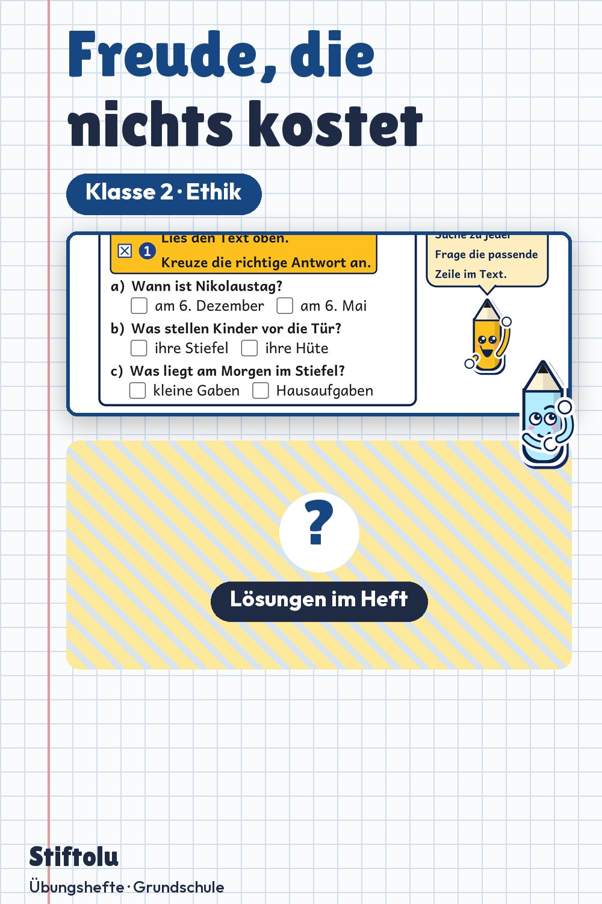

Werbung · Übungsheft von Stiftolu
Fair teilen und Geschenke, die nichts kosten – Ethik in Klasse 2

Muss ein Geschenk etwas kosten? Das letzte Kapitel dieses Ethik-Materials sucht Freude, die nichts kostet, davor geht es um den Brauch und um Geben und Nehmen. Mit 48 Seiten, Lösungen und Handreichung in drei Niveaus, erhältlich auf eduki im Shop Stiftolu.